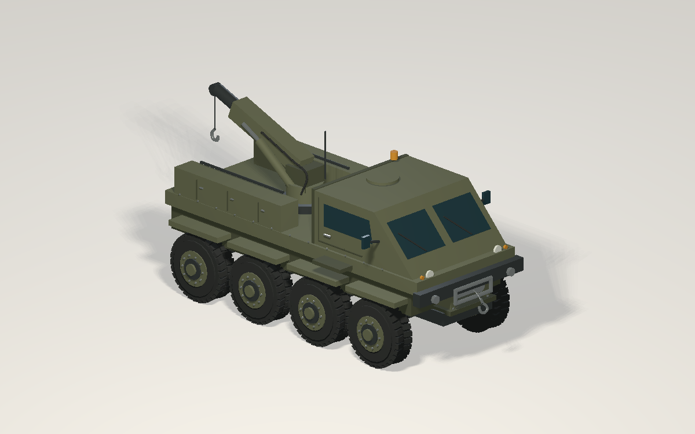
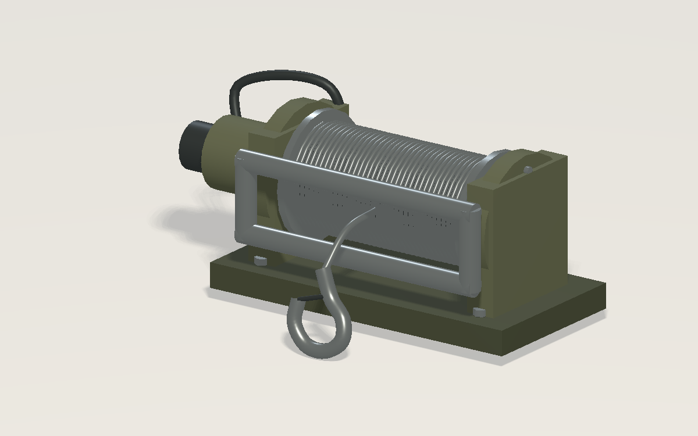
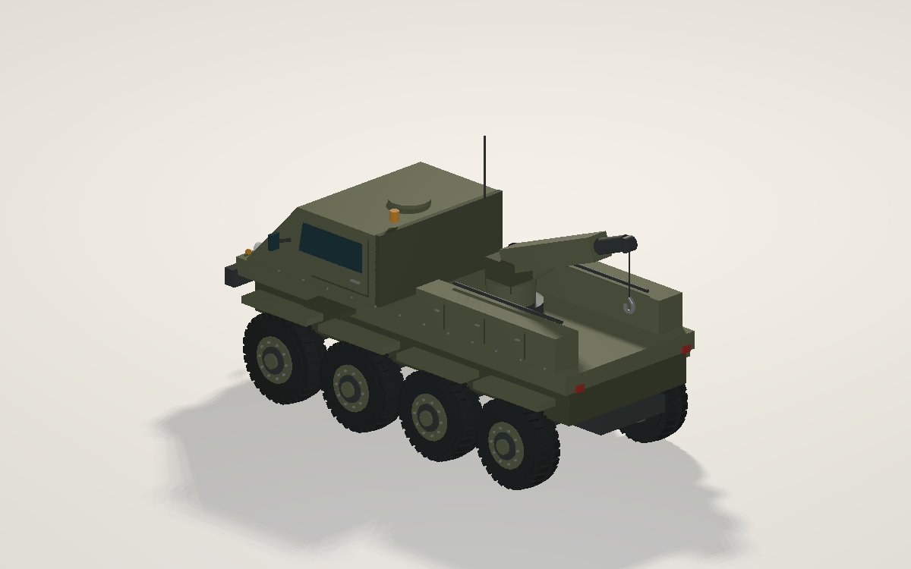

SEA GAME / ASSET STUDIES
One vehicle. One shared recovery system.
A mechanically plausible 8×8 recovery vehicle and its hydraulic winch. Both use the same olive paint, steel fittings, physical scale and actual winch geometry. Illustrative concepts, not specifications of a real manufactured vehicle.
Download vehicle GLB · Download winch GLB
R8 recovery vehicle · 8×8
Loading local bundled Three.js…


